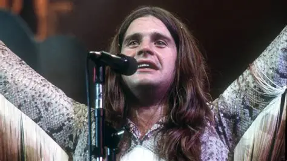
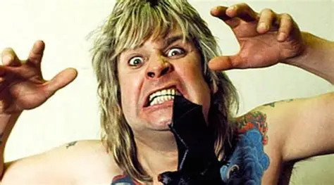
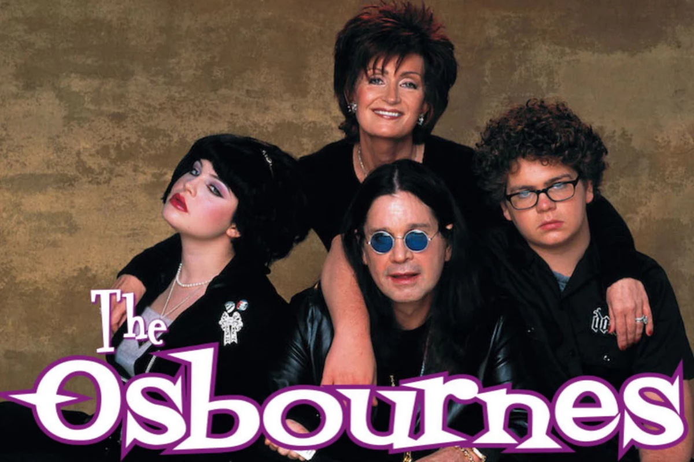
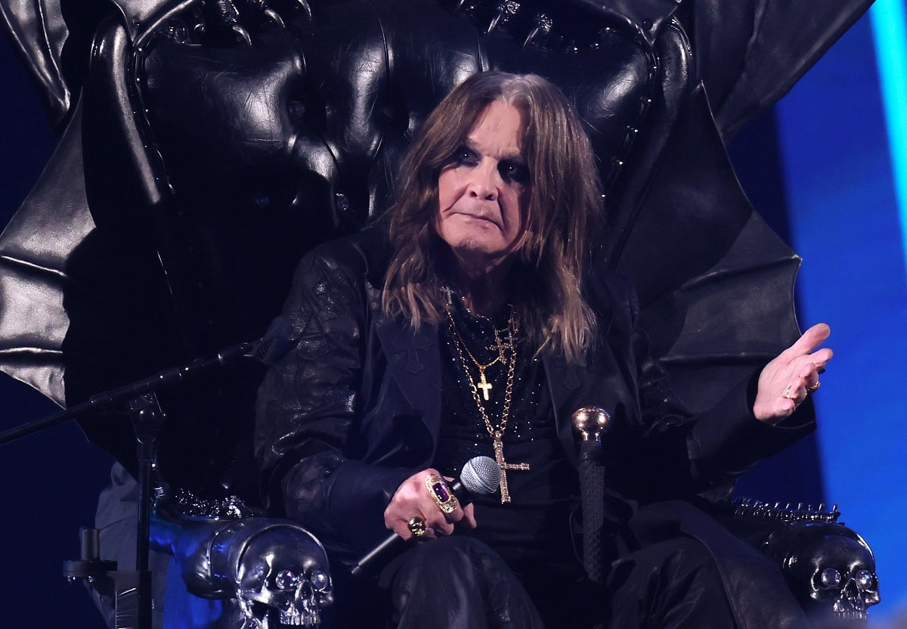
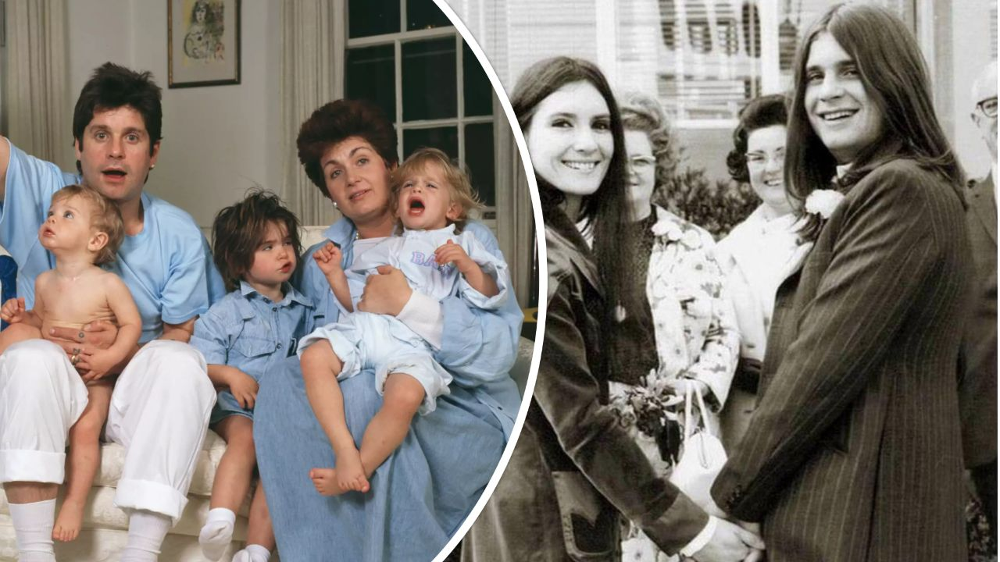
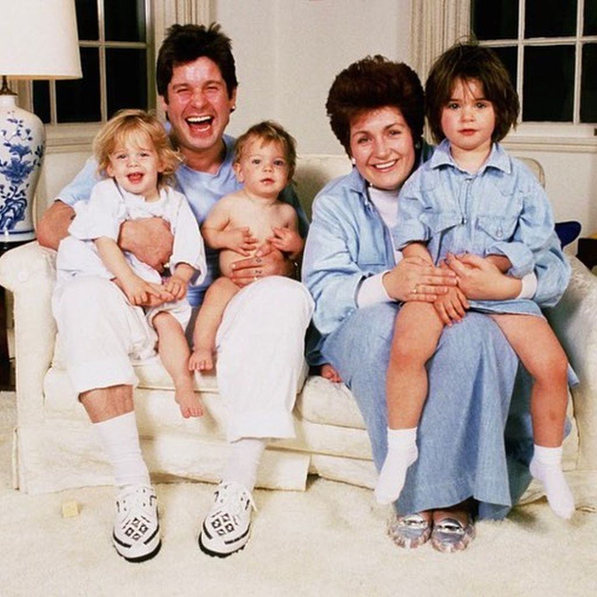
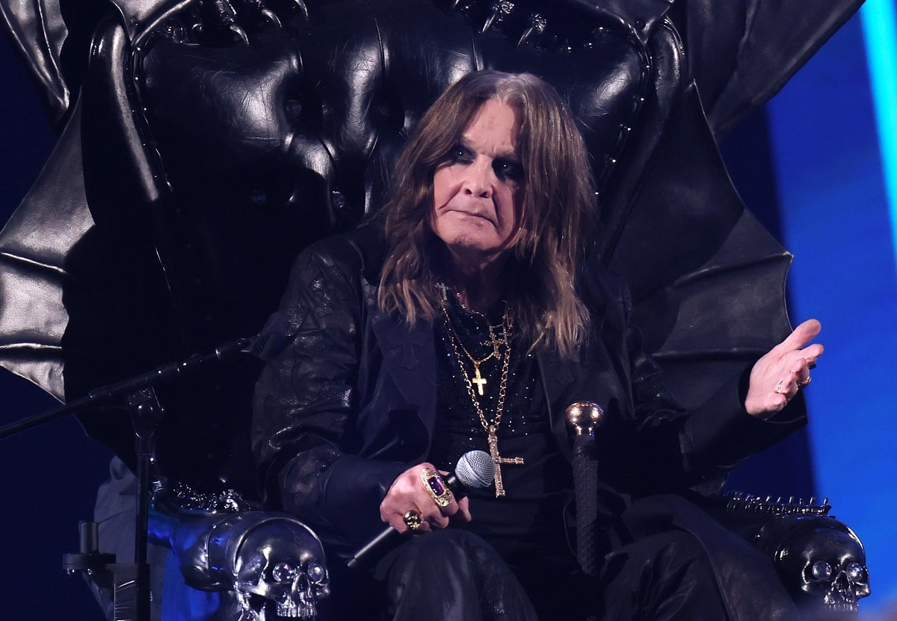
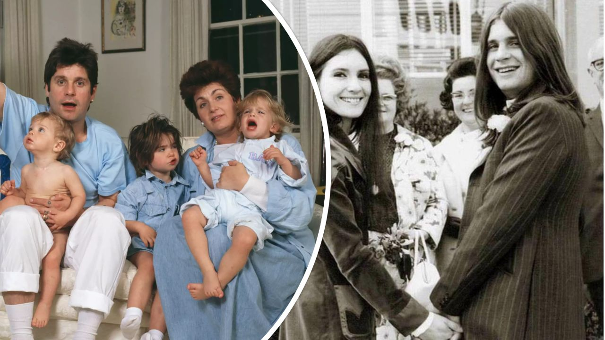
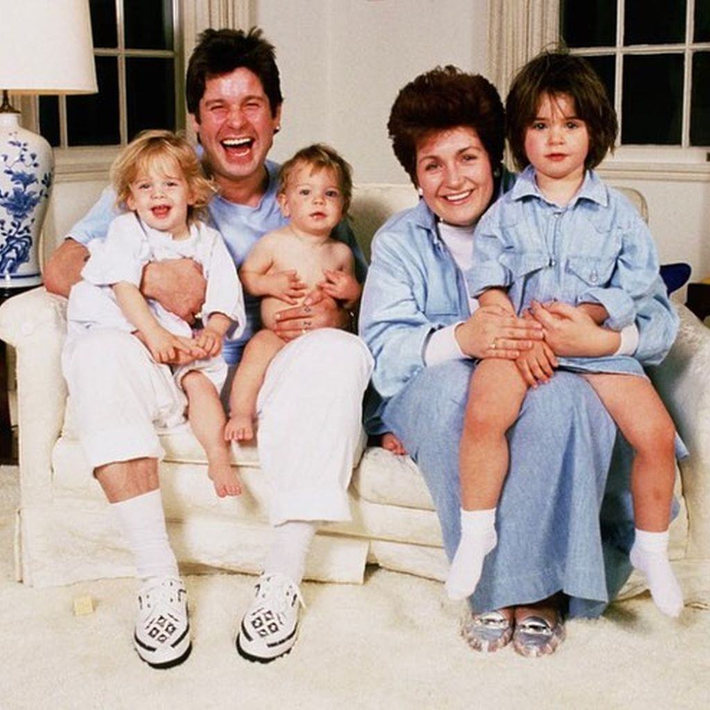

Ozzys Leben – Timeline einer Legende
John Michael "Ozzy" Osbourne wird am 3. Dezember in Aston, Birmingham, geboren – als 4. von 6 Kindern in einer armen Familie. Schon früh kämpft er mit Dyslexie und verlässt die Schule mit 16.

Gründung von Black Sabbath mit Tony Iommi, Geezer Butler und Bill Ward. Aus "Earth" wird "Black Sabbath" – der Heavy Metal wird geboren. Debütalbum 1970 revolutioniert die Musikwelt.

Entlassung aus Black Sabbath wegen Drogenproblemen. Ozzy startet Solo-Karriere mit "Blizzard of Ozz" (1980) – "Crazy Train" und "Mr. Crowley" werden Hymnen.
Der "Bat-Biting"-Vorfall in Des Moines – Ozzy beißt eine Fledermaus (dachte, sie sei fake). Legendärer Moment, der ihn zum "Prince of Darkness" macht.
Heirat mit Sharon Arden – sie wird seine Managerin. Gemeinsam bauen sie Ozzfest auf (ab 1996), das größte Metal-Festival der Welt.

"The Osbournes" startet auf MTV – Ozzy wird Reality-Star. Familie (Sharon, Kelly, Jack) erobert die Welt, trotz Chaos und Suchtprobleme.
Diagnose Parkinson – Ozzy kämpft öffentlich, bleibt aber kreativ. Reunion-Tour mit Black Sabbath (2011–2017), letztes Album "13" (2013).

"Patient Number 9" – letztes Solo-Album mit Gästen wie Tony Iommi, Eric Clapton. Ozzy kündigt Tour-Ende an, aber der Geist lebt weiter.

Ozzy verlässt uns am 30. Juli – aber sein Vermächtnis als Metal-Gott, Vater, Kämpfer lebt in jedem Riff, jedem Fan-Projekt.

Galerie - Klickt auf ein Bild, und seht was passiet! 🤘🏻


 







Zitat
Klick für ein Ozzy-Zitat!
Digitaler Schrein – Ehre Ozzy
Klicke auf den Altar, um Ozzy ein Bier zu spendieren!